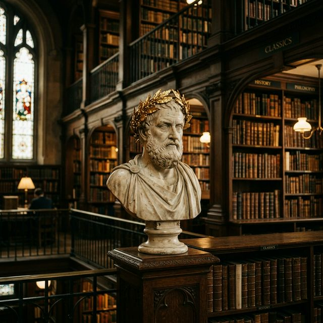

L'Importanza Straordinaria nella Letteratura

A lungo declassato ad una sbrigativa e marginale posizione "isolata" o ritardataria per il suo categorico e polemico rifiuto dell'appariscenza avanguardista dannunziana ed ermetica del primo Novecento, Umberto Saba occupa oggigiorno il gradino più esclusivo ed onesto dell'albo nazionale.
Il grande merito e capolavoro sabiano non fu stravolgere capricciosamente le norme linguistiche, ma incastonare le titaniche tempeste ed evoluzioni introspettive freudiane all'interno del saldo ed incrollabile guscio del tracciato di Parini, Leopardi e Francesco Petrarca, restituendo dignità filosofica e grandezza alla banalità elementare ("amore/fiore").
La sua intramontabile eredità morale è contenuta nel precetto granitico ed universale della Sincerità intellettuale. La poesia infatti non deve ridursi miseramente a formula magica evasiva, né mascherina fittizia d'escapismo, bensì ha il grave dovere d'esser bisturi impietoso col quale, passando per lo sventramento dell'io e il riconoscimento del "dolore amica", s'aiutano gli uomini a comprendere intimamente la Creazione ed il suo battito d'infinito.